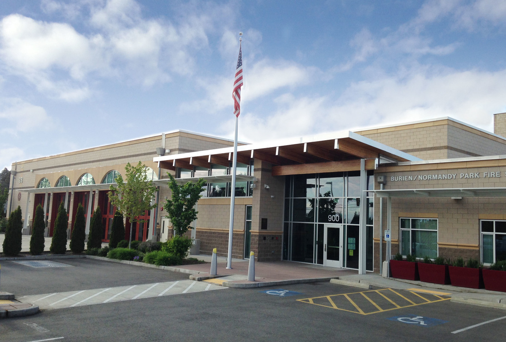

Breakfast Get Together
HARC members enjoy a casual breakfast get-together each Friday at Tuscany at Des Moines Creek at 09:30 AM
General Meetings
HARC meets every 4th Saturday of most months at 10am. We skip June (Field Day) and December (Christmas). Also available via zoom.
Our current meeting location is:
Burien Fire Station #28
900 SW 146th St
Burien, WA 98166
Zoom meeting id is 220 440 1296. Reach out to a board member to get the zoom meeting password.
Board of Trustees Meetings
The regular meeting of the Board of Trustees takes place on the Wednesday preceding the General meeting, at 6:30 PM via Zoom.
Visitors are welcomed at any board meeting. Please schedule with the Board of Trustees if you have business you would like to present.